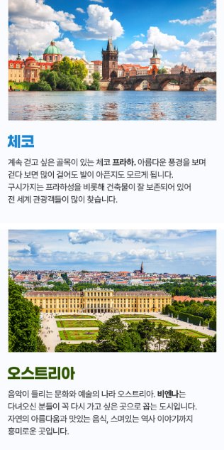
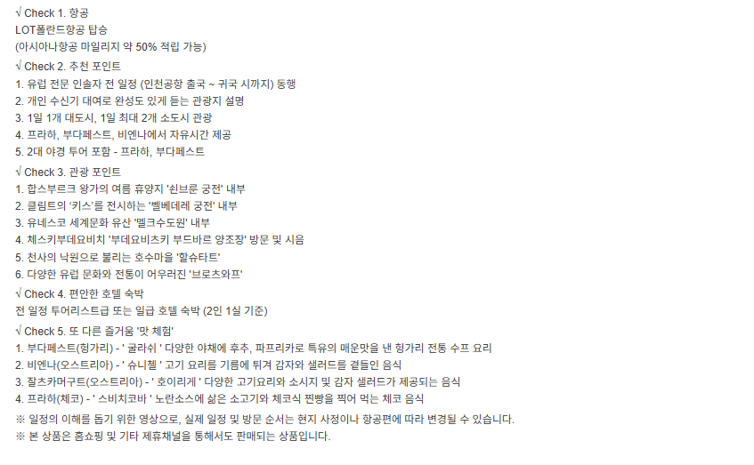

1. 동유럽 4개국 패키지 7박9일의 장점
이번 동유럽 4개국 패키지 7박9일은 체코, 오스트리아, 헝가리, 폴란드까지 네 나라를 한 번에 둘러보는 일정입니다. 유럽 다국가 여행은 도시 간 이동거리와 교통수단을 직접 계획하기 어렵기 때문에 처음 동유럽을 방문하는 경우 패키지 상품이 편리한 선택이 될 수 있습니다. 특히 짧은 기간 안에서 여러 국가의 분위기를 비교해보고 싶은 분이라면 한 나라에만 머무는 일정보다 다양한 건축물과 문화, 음식, 도시 풍경을 경험할 수 있다는 장점이 있습니다.

2. 체코·오스트리아·헝가리·폴란드 핵심 코스
동유럽 여행에서 체코와 오스트리아, 헝가리는 대표적인 인기 여행지로 꼽히며, 이번 상품은 여기에 폴란드까지 포함된 점이 특징입니다. 실제 세부 일정은 상품 페이지를 기준으로 확인해야 하지만 프라하, 비엔나, 부다페스트 등 동유럽을 대표하는 도시들과 폴란드 주요 도시를 함께 연결하는 일정이라면 도시별 분위기 차이를 즐기기에 좋습니다.

3. 직항 일정이 주는 장점
상품명에는 직항이 강조되어 있습니다. 유럽 여행은 장거리 비행이기 때문에 경유 횟수와 대기시간이 전체 피로도에 큰 영향을 줍니다. 직항 일정은 환승 과정이 줄어들어 이동이 상대적으로 단순하고, 도착 후 여행 일정에 집중하기 좋다는 장점이 있습니다. 다만 직항이라고 해도 출발·도착 시간이 늦거나 이른 경우 실제 관광시간이 줄어들 수 있으므로 항공편 스케줄을 함께 확인해야 합니다.

4. 2대 궁전과 브로츠와프 관광
상품명에는 2대 궁전과 폴란드 브로츠와프가 주요 포인트로 안내되어 있습니다. 유럽 궁전 관광은 내부 입장 여부와 가이드 설명, 자유관람 시간에 따라 만족도가 달라질 수 있습니다. 브로츠와프는 도시 곳곳의 난쟁이 조형물로 잘 알려진 폴란드의 개성 있는 도시 중 하나로, 전통적인 동유럽 대도시와는 또 다른 분위기를 경험할 수 있습니다.
5. 동유럽 7박9일 예약 전 확인할 내용
동유럽 다국가 패키지는 국가 간 이동이 많기 때문에 호텔 변경 횟수, 이동거리, 식사 구성, 자유시간, 선택관광과 쇼핑 일정을 꼼꼼하게 살펴보는 것이 중요합니다. 또한 유럽은 도시별로 관광세나 팁, 가이드 경비 등 별도 비용이 발생할 수 있으므로 포함·불포함 비용을 미리 확인하세요.
동유럽 4개국 패키지 7박9일 상품 확인하기
실제 출발일, 가격, 항공편, 호텔, 포함·불포함 조건과 취소 규정은 판매 페이지에서 최종 확인하세요.
여행 상품 자세히 보기 →동유럽 4개국 패키지 7박9일 FAQ
동유럽 4개국 패키지 7박9일 일정은 어떻게 되나요?
상품명 기준 일정으로 정리했으며 실제 세부 일정은 판매 페이지에서 확인하는 것이 가장 정확합니다.
호텔과 항공 조건은 어디서 확인하나요?
출발일에 따라 달라질 수 있으므로 예약 페이지의 최신 조건을 확인하세요.
추가 비용이 있을 수 있나요?
가이드 경비, 선택관광, 자유식, 관광세 등은 상품별로 다를 수 있어 포함·불포함 항목 확인이 필요합니다.
예약 전 무엇을 가장 먼저 봐야 하나요?
출발 확정 여부, 항공시간, 호텔, 실제 체류시간과 취소·환불 규정을 먼저 확인하는 것이 좋습니다.
페이지의 정보만 보고 예약해도 되나요?
이 페이지는 비교용 안내이며 실제 예약은 연결된 판매 페이지의 최신 정보를 기준으로 진행하세요.